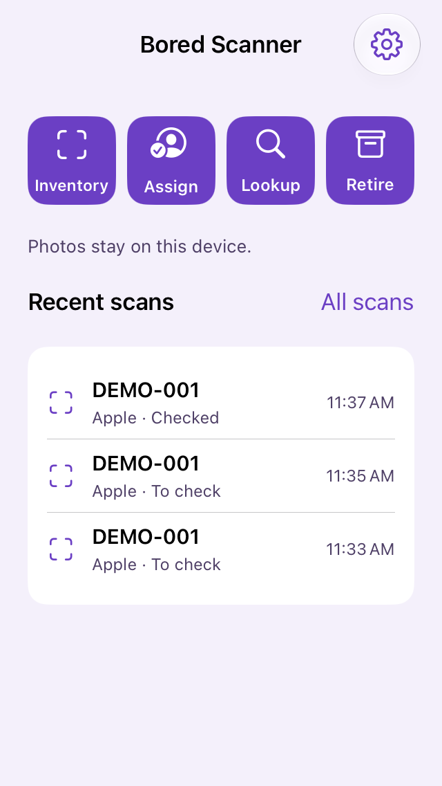
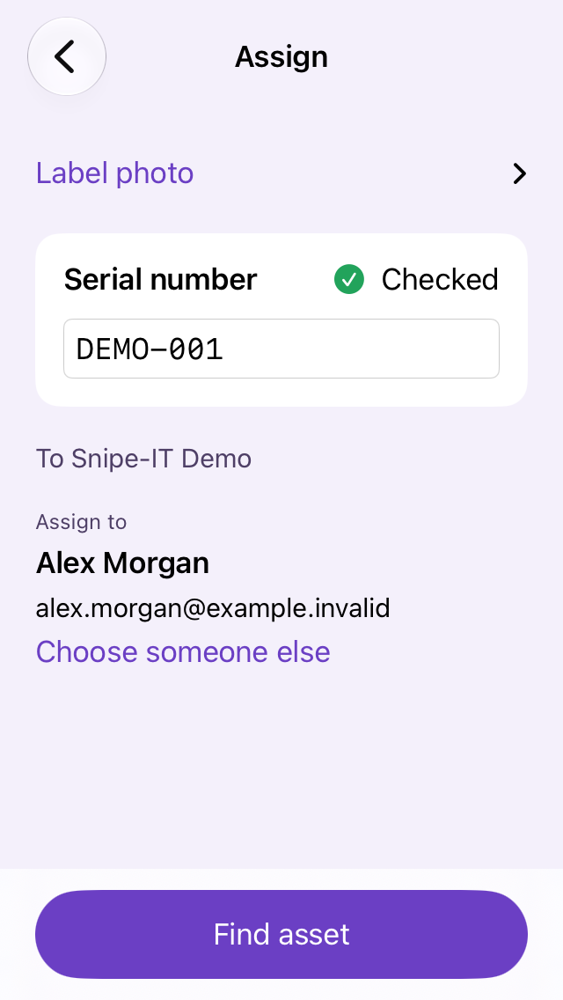
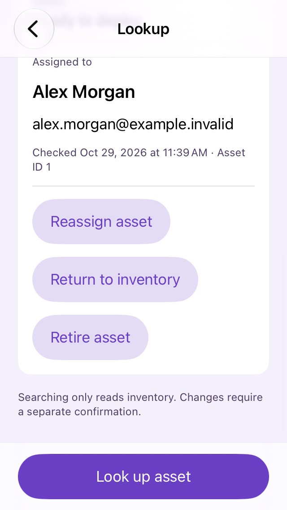
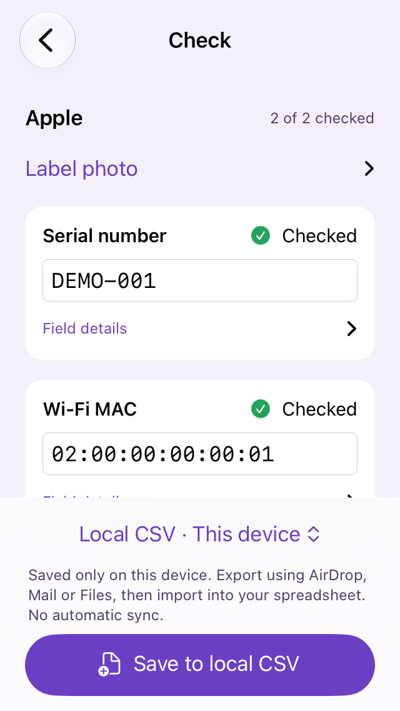
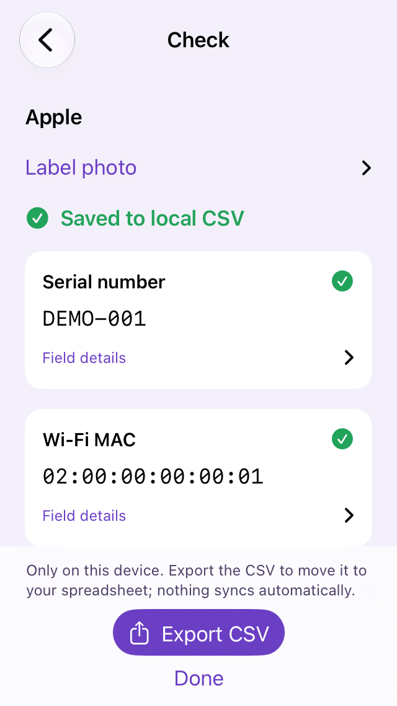

Reads the whole label. Keeps what matters.
A box label is mostly fine print. Bored Scanner reads all of it on the device, then looks for the lines that belong in inventory and drops the rest.
- Kept: serial, part number, Wi-Fi, Ethernet and Bluetooth addresses.
- Skipped: country of origin, FCC and regulatory IDs, copyright, marketing copy.
- Don't want Bluetooth? Turn it off. Other brand? Add a label profile with its wording.
- Unsure or malformed values are flagged for a person to check. Nothing is guessed.
DEMO-001SerialDEMO-PN/APart number02:00:00:00:00:01Wi-Fi MAC02:00:00:00:00:02BluetoothThe desk work, done standing up.
Intake, hand-outs, lookups and retirements used to mean walking back to a computer, opening the asset system and copying serials by hand. Now they happen on an iPhone or iPad, right where the hardware is.
Inventory
Photograph the label, check the fields, send. The asset record is created or updated in Snipe-IT.
Assign
Pick the person from the employees already in your asset system. Search by name or email. No second directory to set up.
Lookup
Found a computer in a cabinet? Scan it or type the serial and see where it stands: ready to deploy, assigned to someone, or retired.
Retire
Done with a computer? Scan it and retire it. It's marked retired in your asset system and the record is kept. It asks before changing anything.
Assign, Lookup and Retire work with Snipe-IT. With Local CSV, Inventory works on its own.
Is Bored Scanner right for you?
Yes, even without an asset system. Start by capturing assets to a spreadsheet. When you add Snipe-IT, Assign, Lookup and Retire turn on. One 99¢ purchase covers both.
No asset system yet
- Inventory saves each checked scan to a CSV on the device.
- Export it by AirDrop, Mail or Files and open it in your spreadsheet.
- No server, no API token, no setup. Install and scan.
- Assign, Lookup and Retire wait until you connect a system. They need one to ask.
With Snipe-IT
- All four jobs: Inventory, Assign, Lookup and Retire.
- Scans go straight into your asset records. No spreadsheet in between.
- Someone with admin access creates an API token and maps the serial and MAC fields once.
- Add the connection in settings whenever you're ready. Your 99¢ already covers it.
Use a different asset system? More can be added on request. Tell us which one you use. Requests decide what gets built next.
Why we're “boring.”
Asset tools are usually sold as platforms, with barcode wands, per-asset pricing and a sales team. Most IT teams just want serial numbers in their asset system without typing them. That's all this does.
No barcode-wand ritual
One photo instead of aiming a wand at the right barcode, five times per box. The camera reads them all at once.
Nobody upselling you
No per-asset pricing, no “enterprise tier,” no account rep. You already pay for an inventory system. This isn't another one.
A person checks every field
Reading text is easy. Knowing which text is the serial is the job. Anything uncertain is flagged, and nothing is sent until you've checked it.
How it works
-
Buy it
99¢ on the App Store, or through Apple Business if you deploy devices in bulk. One copy per iPhone or iPad.
-
Connect your system
No asset system? Skip this and pick Local CSV. Otherwise enter your Snipe-IT address and API token and map the fields, or push it all from your MDM.
-
Scan, check, send
Inventory, Assign, Lookup and Retire. Each one: point the camera, check the fields, confirm.
What it looks like
Scan, check, send. The same rhythm for every job.

Four jobs on one screen. Recent scans below.
Check every value before it's sent.

Assign: pick a person from your inventory system's own directory.

Lookup: who has it, then reassign, return or retire. Each change asks first.

No inventory system? Save to a CSV on the device.

Export the CSV by AirDrop, Mail or Files. Nothing syncs on its own.
Screenshots use fictional demo data.
We don't want your data. Honestly, it sounds “boring.”
An asset scanner sees serial numbers, MAC addresses and who has which laptop. That belongs in your inventory system, not ours.
- We never see your assets or your people. The app talks to your inventory system and nothing else.
- Label photos and everything the camera read stay on the device. Only the fields you checked are sent.
- Your API token lives in the device's Keychain, not in the app's settings.
- Spreadsheet mode stays on the device until you export the file yourself.
- No analytics, no crash reporting, no tracking, no third-party code.
Why we can say this. There is no Bored Scanner backend. We couldn't collect your data if we wanted to, and we've designed it so we never want to. The details are in the privacy policy.
Everything's included. Nothing's “exciting.”
- Inventory, Assign, Lookup and Retire, all four
- Label reading on the device, with Apple hardware built in and your own label profiles
- Works with Snipe-IT, or saves scans to a CSV for your spreadsheet
- Start with CSV, connect a system later: no upgrade fee
- Employee search from your inventory system's own user list
- Full MDM support (Jamf, Kandji and friends), no “enterprise tier”
Buying for a whole team? Apple Business lets you buy copies in bulk and push them to devices with no Apple ID on the device. Still 99¢ each.
The “boring” family.
Four apps, one rule: 99¢, no subscription, no backend, your data stays yours.
Questions
When can I buy it?
Soon. Bored Scanner is finishing testing before it goes to the App Store.
Does it work with my asset system?
Snipe-IT today, plus Local CSV for any spreadsheet. Other asset systems are added on request. Tell us which one you use.
Can I use it without Snipe-IT?
Yes. Pick Local CSV and Inventory saves each checked scan to a CSV file on the device. Export it to a Mac or PC and open it in your spreadsheet. Assign, Lookup and Retire need an asset system to ask, so they switch on when you connect Snipe-IT. That costs nothing extra.
iPhone or iPad?
Either. One app runs on both. An iPhone is easier to carry down a pallet; an iPad works fine on a receiving bench.
Does it read every manufacturer's labels?
Apple's labels are built in. For anything else, add a label profile in settings: tell it what the serial and MAC lines are called on that box, and it looks for those. Whatever it isn't sure of gets flagged for you to check.
Does Retire wipe the device?
No. Retire marks the asset retired in your inventory system and keeps its record. Wiping and disposal stay with your MDM and your recycler.
Is there a subscription, ever?
No. 99¢ buys the app. Updates are free. There's no server to pay for, so there's nothing to charge you for.